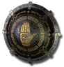

Set
Orphan's Call
4 items, level 42

Guillaume's Face
Winged Helm
Defense: 85-98
Required Level: 34
+120-150% Enhanced Defense
+30% Faster Hit Recovery
+30% Deadly Strike
+15 to Strength
10% chance to cast level 10 Shout when struck
(2 items) +15% Chance of Crushing Blow

Wilhelm's Pride
Battle Belt
Defense: 37-42
Required Level: 42
+75-100% Enhanced Defense
+5% Mana stolen per hit
+15% Cold Resistance
+5% Life stolen per hit
+25% Extra Gold from Monsters
(2 items) +25% Chance Items Roll Magic or Better
(3 items) Physical Damage Reduced By 10

Magnus' Skin
Sharkskin Gloves
Defense: 33-39
Required Level: 37
+50-100% Enhanced Defense
+15% Fire Resistance
+20% Increased Attack Speed
+100 to Attack Rating
(2 items) +10 to Dexterity
(3 items) +10 to Vitality

Whitstan's Guard
Round Shield
Defense: 47-55
Chance to Block: 12%
Required Level: 29
+150-200% Enhanced Defense
+30-50% Faster Block Rate
20-30% Increased Chance of Blocking
+1 Cannot Be Frozen
(2 items) +15% to All Resistances
(3 items) +1 to All Skills
Set bonuses
- 2 items: +50 to Life
- 3 items: +50 to Mana
- 4 items: +100 Defense
Full set
- +50 to Life
- +15 to all Attributes
- 10% chance to cast level 15 Battle Orders when struck
- +100 Defense
- +20% to All Resistances
- +100% Chance Items Roll Magic or Better